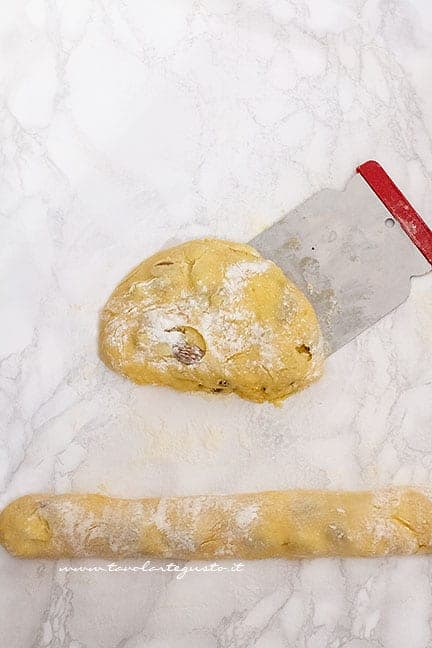
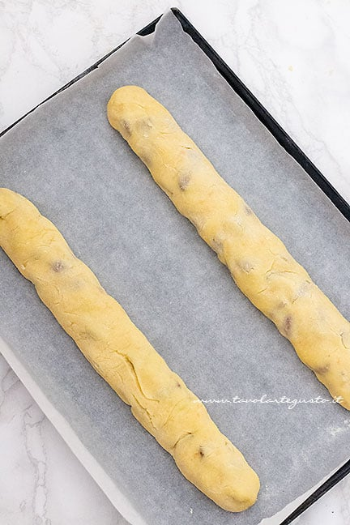
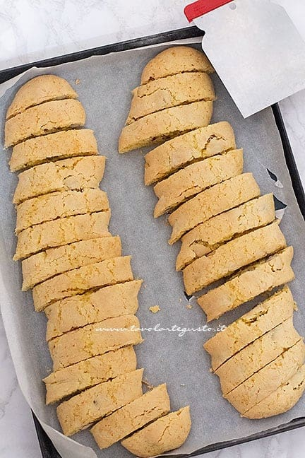
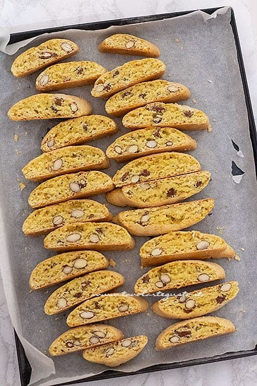
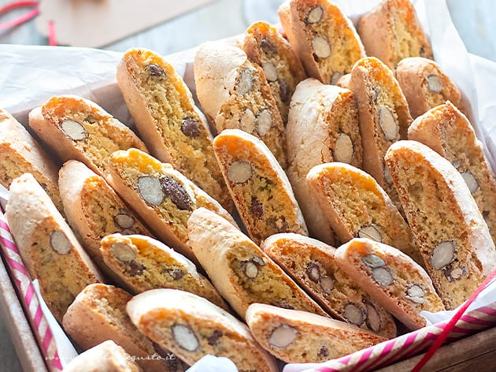

Cantucci
Origini
L’origine dei cantucci risale almeno al XVI secolo. Il nome sembra derivare da “cantellus”, in latino “pezzo o fetta di pane”,
una galletta salata che già i soldati romani consumavano durante le campagne militari. Altri fanno derivare la parola da “canto”,
angolo, piccola parte.
A partire dalla seconda metà del ‘500, troviamo questi biscotti alla corte dei Medici, anche se pare non
contenessero ancora le mandorle. L’Accademia della Crusca a fine ‘600 dà la prima definizione di “cantuccio”:
“biscotto a fette, di fior di farina, con zucchero e chiara d’uovo”.
Nel XIX secolo Antonio Mattei, pasticciere di Prato,
ne mise a punto una ricetta divenuta poi classica, con la quale ricevette numerosi premi a fiere campionarie in Italia
e all'estero, tra cui una menzione speciale all'esposizione universale di Parigi del 1867.
La bottega di "Mattonella" (nome popolare del biscottaio) esiste ancora oggi a Prato ed è considerata la depositaria della tradizione dei cantucci.
Ricetta
| Difficoltà | Media |
| Tempo di preparazione | 10 Minuti |
| Tempo di cottura | 20 Minuti |
| Porzioni | 40 Pezzi |
| Metodo di cottura | Forno |
| Cucina | Italiana(Toscana) |
Ingredienti
Per l'impasto
- 280g Farina 00
- 150g Zucchero semolato
- Vaniglia
- 2 Uova
- un pizzico di Sale
- 1 cucchiaino di Ammoniaca per dolci
- Buccia gratuggiata 1 arancia
- Buccia gratuggiata 1 limone
- 130g Mandorle con la pelle
Preparazione dei Cantucci
Impasto
Prima di tutto, mescolare insieme con una forchetta uova, zucchero, bucce grattugiate degli agrumi, sale e vaniglia.
Aggiungete quindi la farina e l’ammoniaca per dolci.
Impastate pochi secondi fino ad ottenere un ‘impasto omogeneo. Se attacca alle dita, spolverate un pochino di farina.
Aggiungete le mandorle con tutta la pelle.
Impastate bene, dividete l’impasto a metà e con l’aiuto di un pochino di farina realizzate 2 filoncini larghi 3cm circa.
Importante per avere dei cantucci dalla forma perfetta, non appiattire il filoncino, ma disporlo in una teglia foderata di carta da forno bello tondo


Cottura
Cuocete a 180° nella parte media del forno per circa 15 – 18 minuti il tempo che i filoncini si gonfieranno.
A questo punto potete affettare con una lama, tarocco o coltello i tozzetti ad uno spessore di circa 1 cm e mezzo – 2 cm.
Capolvegete i tozzetti e cuocete ancora in forno 4 minuti da una parte; poi girateli e fate cuocere altri 4 minuti dall’altra parte.
Sfornate e lasciate intiepidire


Appena fuori dal forno sembreranno duri, invece lasciate passare qualche ora e vedrete al morso risulteranno fragranti e morbidi.

Conservazione
I cantucci si conservano a lungo: teneteli in una scatola di latta ben chiusa, al riparo dall’umidità: resteranno fragranti fino a 30 giorni.
Ricordatevi però che come tutti i biscotti temono l’umidità: se dovessero ammorbidirsi, purtroppo dovrete buttarli.